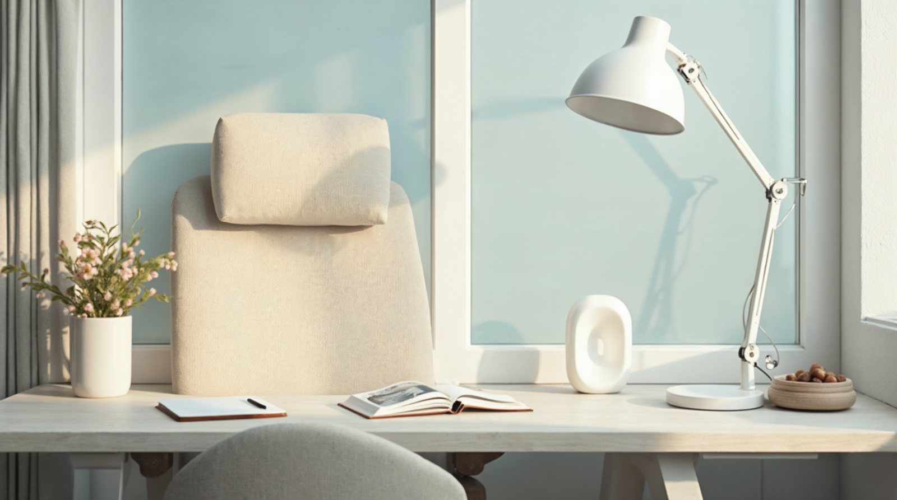
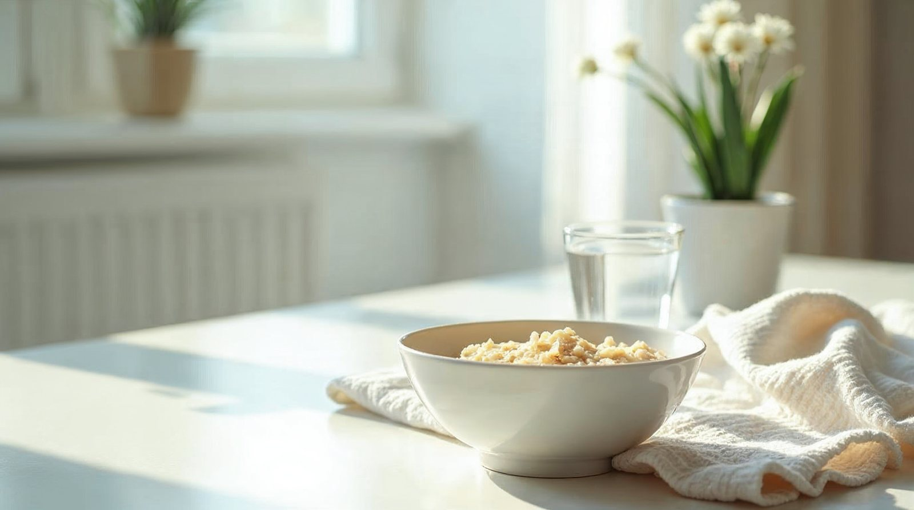

이종호 한의사 감수좋은꿈참사랑한의원 대표원장 (한의사 면허번호 19769)발행 2026-11-26 · 수정 2026-11-27
이 글의 차례
저녁을 먹고 소파에 앉아 드라마를 보는데, 오른쪽 갈비뼈 아래가 묵직하게 눌리기 시작합니다. 자세를 바꿔 봐도 그때뿐이고, 배 속에서 작은 발이 그 자리를 꾹꾹 밀어 올리는 게 느껴지죠. 결국 일어나 팔을 머리 위로 뻗고 서성이다가 한숨이 나옵니다.
임신 후기에 갈비뼈 아래가 아프다는 말씀은 진료실에서 정말 자주 들어요. 오래 앉아 있을 때, 식사 뒤에, 밤에 누웠을 때 더 심하다고들 하세요. 숨이 깊게 안 쉬어지고 몸을 숙이기도 어려우니 하루가 꽤 버겁습니다.
먼저 말씀드리고 싶은 건, 이 통증은 대부분 아기가 자라면서 생기는 자연스러운 변화라는 거예요. 원래 그래요. 아기가 커지는 만큼 엄마 몸 안의 자리가 좁아지니까요.
그러니까 사실은 두 가지를 나눠 보셔야 해요. '자리가 좁아서 생기는 통증'과 '혈압이 오르거나 간에 부담이 생겨서 오는 통증'은 같은 자리라도 다른 얘기거든요. 뒤쪽은 산부인과에서 함께 확인해야 하는 부분입니다.
이 글에서는 왜 이런 통증이 생기는지, 두 가지를 어떻게 나눠 보는지, 집에서 해 볼 수 있는 자세와 숨쉬기는 무엇인지 정리했어요. 산부인과 검진은 그대로 이어 가시면서, 한의원에서 함께 살필 수 있는 부분도 말씀드릴게요.
왜 임신 후기에 갈비뼈 아래가 아플까요
임신 후기가 되면 자궁은 명치 가까이까지 올라옵니다. 커진 자궁이 위로 밀고 올라오면서 그 위에 있던 위와 장, 간이 갈비뼈 안쪽으로 밀려 올라가고, 갈비뼈 아래 공간이 꽉 차게 됩니다. 앉아 있을 때 더 답답한 것은 배가 접히며 그 공간이 더 좁아지기 때문입니다.
갈비뼈 자체도 달라집니다. 몸은 아기가 자랄 공간을 만들기 위해 갈비뼈 아래쪽을 조금씩 옆으로 벌립니다. 호르몬의 영향으로 관절과 인대가 느슨해진 상태에서 갈비뼈가 벌어지면, 갈비뼈와 연골이 만나는 자리나 갈비뼈 사이 근육이 뻐근하고 아플 수 있습니다.
아기의 자세도 영향을 줍니다. 머리가 아래로 내려온 아기라면 발이 갈비뼈 쪽에 있게 되고, 아기가 다리를 쭉 펴거나 발길질을 할 때마다 그 자리가 눌립니다. 아기가 한쪽으로 치우쳐 있으면 한쪽 갈비뼈만 유난히 아프기도 합니다.
여기에 자세가 더해집니다. 배가 무거워지면서 몸은 자연스럽게 등을 뒤로 젖히고 어깨를 앞으로 말게 됩니다. 이 자세가 오래 이어지면 등과 옆구리 근육이 굳고, 갈비뼈 주변의 뻐근함이 더 커집니다.
흔한 통증과 확인이 필요한 통증은 어떻게 다를까요
임신 후기의 흔한 갈비뼈 통증은 자세와 관련이 깊습니다. 앉으면 심해지고 일어서거나 팔을 들면 조금 나아지며, 아기가 움직일 때 함께 심해지는 경우가 많습니다. 손으로 갈비뼈 가장자리를 만지면 그 자리가 뻐근하게 아프기도 합니다.
반면 아래와 같은 통증은 같은 자리라도 다르게 봐야 합니다. 임신 후기에 혈압이 오르면서 간에 부담이 생기면 오른쪽 윗배나 명치가 아플 수 있는데, 이 경우 자세를 바꿔도 통증이 줄지 않는 경우가 많습니다.
- 자세와 상관없이 오른쪽 윗배나 명치 깊은 곳이 계속 아픈 경우
- 통증과 함께 심한 두통이나 눈앞이 흐려지는 느낌이 있는 경우
- 얼굴과 손이 갑자기 붓거나 체중이 며칠 새 크게 는 경우
- 속이 메스껍고 토하는 증상이 임신 후기에 새로 생긴 경우
- 피부나 눈 흰자가 노래 보이거나 온몸이 심하게 가려운 경우
이런 모습이 있다면 다니시는 산부인과에 먼저 알려 혈압과 혈액 검사를 확인해 보시는 것이 순서입니다. 담석이나 위의 불편, 폐의 문제처럼 다른 이유가 있는 경우도 있어서 판단은 병원에서 하시는 것이 맞습니다.
명치 쓰림과 갈비뼈 통증이 함께 올 때
임신 후기에는 위가 위로 밀려 올라가 속쓰림과 신물이 올라오는 일도 흔합니다. 그래서 갈비뼈 아래가 뻐근한 것인지, 속이 쓰린 것인지 헷갈린다고 말씀하시는 분이 많습니다. 식사 뒤나 누웠을 때 가슴 쪽으로 화끈한 느낌이 올라온다면 역류와 관련이 있을 수 있습니다.
이럴 때는 한 번에 많이 드시기보다 조금씩 나누어 드시고, 식사 뒤 바로 눕지 않는 것이 도움이 됩니다. 잘 때는 상체를 조금 높여 주세요. 속이 편해지면 갈비뼈 아래의 답답함도 함께 덜해지는 분이 있습니다.
숨이 잘 안 쉬어지는 느낌은 왜 생기나요
갈비뼈 아래가 꽉 찬 느낌과 함께 숨이 깊게 쉬어지지 않는다는 분이 많습니다. 숨을 들이쉴 때 아래로 내려가야 할 횡격막이 커진 자궁에 막혀 충분히 내려가지 못하기 때문입니다. 그래서 숨이 얕고 짧아지며, 계단 몇 개만 올라도 숨이 차는 느낌이 듭니다.
이 숨참은 대개 앉은 자세를 바꾸거나 몸을 곧게 펴면 조금 나아집니다. 출산이 가까워져 아기가 골반 쪽으로 내려오면 갈비뼈 아래 공간이 넓어지면서 숨쉬기가 한결 편해졌다고 말씀하시는 분도 많습니다.

오래 앉아 일하는 임산부라면
사무실에서 하루 종일 앉아 일하시는 분은 갈비뼈 아래 통증을 더 자주 말씀하십니다. 의자에 깊이 앉지 않고 앞으로 기울어 모니터를 보는 자세가 이어지면 배가 접히면서 갈비뼈 아래 공간이 더 좁아지기 때문입니다.
의자는 엉덩이를 등받이 끝까지 밀어 넣고 앉고, 허리 뒤에 작은 쿠션을 대어 등을 곧게 세워 주세요. 모니터는 눈높이에 가깝게 올리고, 키보드는 몸 가까이 당겨 어깨가 앞으로 말리지 않게 합니다. 발밑에 낮은 받침을 두면 골반이 편해지는 분도 있습니다.
알람을 30분이나 한 시간 간격으로 맞춰 두고, 울릴 때마다 일어나 팔을 위로 쭉 뻗어 보세요. 화장실이나 정수기까지 걸어갔다 오는 것만으로도 갈비뼈 주변이 한결 풀립니다. 회의가 길어질 때는 잠깐 서서 듣겠다고 양해를 구하셔도 괜찮습니다.
갈비뼈 통증, 흔히 헷갈리는 것
첫째, 갈비뼈에 금이 간 것은 아닐까 걱정하시는 경우입니다. 임신 후기의 갈비뼈 통증은 대부분 공간이 좁아지고 근육과 연골이 당기면서 생기는 것으로, 뼈가 다친 것과는 다릅니다. 다만 넘어지거나 부딪힌 뒤 생긴 통증이라면 산부인과에 꼭 말씀해 주세요.
둘째, 아기가 너무 커서 아픈 것이라고 걱정하시는 경우입니다. 통증의 정도는 아기의 크기보다 자세와 엄마의 체형, 갈비뼈가 벌어지는 정도에 따라 더 많이 달라집니다. 아기의 크기는 산부인과 검진에서 확인하시면 됩니다.
셋째, 통증이 있으니 움직이지 않는 것이 좋다고 여기시는 경우입니다. 오래 가만히 앉아 있으면 오히려 근육이 굳고 공간이 더 좁아집니다. 산부인과에서 안정하라는 말씀이 없었다면 자주 일어나 조금씩 걷고 몸을 펴 주는 편이 갈비뼈를 덜 힘들게 합니다.
먼저 이렇게 여쭙니다
처음 오시면 저는 대략 이런 순서로 여쭙니다. 미리 생각해 오시면 상담이 훨씬 수월해집니다.
- 지금 임신 몇 주이시고, 갈비뼈 통증은 언제부터 시작됐나요?
- 오른쪽, 왼쪽, 양쪽 가운데 어디가 아프신가요? 손가락으로 가리킬 수 있나요?
- 앉을 때, 누울 때, 식사 뒤, 아기가 움직일 때 가운데 언제 심해지나요?
- 자세를 바꾸거나 팔을 들면 조금 나아지나요?
- 최근 검진에서 혈압과 소변 검사는 어떻다고 들으셨나요?
- 두통이나 붓기, 속쓰림이 함께 있나요?
임신 전부터 등이나 옆구리가 자주 결렸는지, 하루에 앉아 있는 시간이 얼마나 되는지도 함께 여쭙니다. 평소의 자세 습관이 지금의 통증에 겹쳐 있는 경우가 많기 때문입니다.
모든 질문에 정확히 답하지 못하셔도 괜찮습니다. 가장 아팠던 순간에 어떤 자세였는지만 떠올려 오셔도 이야기는 충분히 시작됩니다.
일상에서 먼저 해 볼 수 있는 것
임신 후기 갈비뼈 통증은 공간을 조금이라도 넓혀 주는 자세가 도움이 되는 경우가 많습니다. 산부인과에서 따로 조심하라는 말씀이 없을 때 편한 것부터 골라 해 보세요.
- 앉을 때 등받이에 기대어 허리를 곧게 펴고, 30분마다 일어나 움직이기
- 아플 때 한쪽 팔을 머리 위로 올리고 반대쪽으로 천천히 몸을 기울이기
- 식사는 조금씩 자주 나누고, 식후 바로 눕지 않기
- 잘 때는 옆으로 눕고 등 뒤와 다리 사이에 쿠션 받치기
- 숨을 내쉴 때 갈비뼈가 안으로 모이는 느낌으로 길게 내쉬기
- 몸에 붙지 않는 넉넉한 옷과 와이어 없는 속옷 입기
아기가 한쪽 갈비뼈를 계속 밀어 올릴 때는 반대쪽으로 돌아눕거나 무릎을 꿇고 손을 바닥에 짚는 자세를 잠깐 취해 보세요. 배가 아래로 처지면서 갈비뼈 쪽 압박이 잠시 줄어드는 분이 있습니다. 어지럽거나 불편하면 바로 멈추시면 됩니다.
숨쉬기는 등을 곧게 펴고 앉아 양손을 갈비뼈 옆에 대고 해 보세요. 들이쉴 때 손이 옆으로 벌어지는 것을 느끼고, 내쉴 때 갈비뼈가 안으로 모이는 것을 느끼며 천천히 내쉽니다. 하루 몇 번, 한 번에 다섯 번 정도면 충분합니다.
따뜻한 수건을 등 쪽 갈비뼈 아래에 대어 주는 것도 도움이 될 수 있습니다. 너무 뜨겁지 않게, 10~15분 정도 대어 주세요. 배 쪽보다는 등과 옆구리 쪽 근육을 풀어 준다고 생각하시면 됩니다.

한의원에서 함께 살필 수 있는 경우
- 산부인과에서 큰 이상은 없다는데 갈비뼈 아래 뻐근함이 이어지는 경우
- 등과 옆구리 근육이 굳어 숨쉬기와 돌아눕기가 불편한 경우
- 오래 앉아 일해야 해서 갈비뼈와 허리가 함께 아픈 경우
- 속이 더부룩하고 신물이 올라와 밤잠을 설치는 경우
- 통증 때문에 잠이 얕고 낮에 피로가 심한 경우
좋은꿈참사랑한의원에서는 모든 분의 맥을 먼저 짚고, 아래 '먼저 확인이 필요한' 신호가 없는지도 함께 봅니다. 그다음 필요하다고 판단되면 혈압을 재며, 통증의 자리와 자세, 소화와 잠을 여쭙습니다. 배는 누르지 않으며 등과 옆구리 근육을 살핍니다.
진찰한 내용을 바탕으로 생활에서 바꿔 볼 자세 하나와 함께, 지금 몸 상태에 맞는 관리 방법을 정합니다. 임신 중 침은 자리와 깊이, 시간을 조심스럽게 고르고, 한약은 산부인과와 상의하고 드시는 약을 확인한 뒤 신중하게 결정합니다. 처방받은 약은 산부인과와 상의 없이 멈추지 않습니다.
한의원 진료는 산부인과 진료를 대신하는 것이 아니라 나란히 가는 것입니다. 산부인과에서 혈압과 아기를 챙기고, 한의원에서는 그 사이 엄마의 등과 옆구리, 숨쉬기와 잠을 함께 살핀다고 생각해 주시면 됩니다.
이렇게 기록해 오시면 상담이 쉬워집니다
갈비뼈 통증은 자세와 시간에 따라 크게 달라집니다. 일주일 정도만 간단히 적어 보세요.
- 아팠던 날짜와 시각, 아픈 자리(오른쪽, 왼쪽, 양쪽)
- 그때의 자세와 하고 있던 일
- 자세를 바꾸거나 팔을 들었을 때 나아졌는지
- 식사 시각과 속쓰림 여부
- 집에서 잰 혈압이 있다면 그 숫자
- 두통, 붓기, 메스꺼움이 함께 있었는지
기록을 보면 통증이 자세와 관련 있는지, 다른 이유를 살펴야 하는지가 조금씩 보입니다. 같은 기록을 산부인과 검진 때 보여 드리면 이야기가 훨씬 수월해집니다.
아기가 자라는 만큼 공간을 만들어 주세요
임신 후기 갈비뼈 통증은 아기가 그만큼 잘 자라고 있다는 뜻이기도 해요. 출산이 가까워져 아기가 아래로 내려오면 한결 편해졌다는 분이 많으니, 그때까지는 몸 안에 공간을 조금씩 만들어 주는 쪽으로 지내시면 됩니다.
등과 옆구리를 살피는 건 제가 맡을게요. 대신 하나만 부탁드려요. 30분에 한 번 일어나서 팔을 머리 위로 올리고 반대쪽으로 천천히 몸을 기울여 주세요. 딴 건 하시던 대로 편하게 하셔도 돼요.
못 지킨 날이 있어도 괜찮아요. 배가 무거운 몸으로 일어나는 것 자체가 일이거든요. 다음 30분에 다시 하시면 되는 거예요.
통증이 심한 날에는 아기에게 말을 걸듯 배를 가볍게 쓸어 주며 자세를 천천히 바꿔 보세요. 남은 몇 주를 조금 더 편하게 보내는 게 지금의 목표예요. 다음에 오시면 통증 기록부터 같이 펼쳐 볼게요. 궁금한 건 그냥 편하게 물어보세요.
이런 증상은 먼저 확인이 필요합니다
- 자세와 상관없이 오른쪽 윗배나 명치가 계속 아프면서 심한 두통, 눈앞이 흐려짐, 갑자기 붓는 얼굴과 손이 함께 있는 경우
- 가만히 있어도 숨이 심하게 차고 가슴이 아프거나 기침에 피가 섞이는 경우
이런 신호가 있으면 한의원보다 가까운 병원이나 응급실을 먼저 찾으세요.
함께 읽으면 좋은 글
- 임신 중 속쓰림과 신물이 올라오는 역류는 왜 생기고, 일상에서는 어떻게 줄이나요?
- 숨을 크게 쉬거나 몸을 돌릴 때 갈비뼈가 찌릿한 늑간신경통·늑연골염은 어떻게 살피나요?
- 임신 중 허리와 골반, 치골이 아플 때는 무엇을 살피고 생활은 어떻게 하나요?
- 임신 중 밤에 잠이 오지 않거나 자주 깰 때는 무엇을 살피고 어떻게 지내나요?
- 임신 중 두통이 잦아졌을 때는 무엇을 살피고, 약은 어떻게 상의하나요?
여쭙는 것
- 지금 임신 몇 주이시고, 갈비뼈 통증은 언제부터 시작됐나요?
- 오른쪽, 왼쪽, 양쪽 가운데 어디가 아프신가요? 손가락으로 가리킬 수 있나요?
- 앉을 때, 누울 때, 식사 뒤, 아기가 움직일 때 가운데 언제 심해지나요?
생활에서 해 볼 것
- 앉을 때 등받이에 기대어 허리를 곧게 펴고, 30분마다 일어나 움직이기
- 아플 때 한쪽 팔을 머리 위로 올리고 반대쪽으로 천천히 몸을 기울이기
- 식사는 조금씩 자주 나누고, 식후 바로 눕지 않기
한의원에서 함께 살필 것
- 산부인과에서 큰 이상은 없다는데 갈비뼈 아래 뻐근함이 이어지는 경우
- 등과 옆구리 근육이 굳어 숨쉬기와 돌아눕기가 불편한 경우
- 오래 앉아 일해야 해서 갈비뼈와 허리가 함께 아픈 경우
먼저 확인이 필요한 신호
- 자세와 상관없이 오른쪽 윗배나 명치가 계속 아프면서 심한 두통, 눈앞이 흐려짐, 갑…
- 가만히 있어도 숨이 심하게 차고 가슴이 아프거나 기침에 피가 섞이는 경우
한눈에 보는 표
| 구분 | 핵심 |
|---|---|
| 여쭙는 것 | 지금 임신 몇 주이시고, 갈비뼈 통증은 언제부터 시작됐나요? 오른쪽, 왼쪽, 양쪽 가운데 어디가 아프신가요? 손가락으로 가리킬 수 있나요? |
| 생활에서 해 볼 것 | 앉을 때 등받이에 기대어 허리를 곧게 펴고, 30분마다 일어나 움직이기 아플 때 한쪽 팔을 머리 위로 올리고 반대쪽으로 천천히 몸을 기울이기 |
| 한의원에서 함께 살필 것 | 산부인과에서 큰 이상은 없다는데 갈비뼈 아래 뻐근함이 이어지는 경우 등과 옆구리 근육이 굳어 숨쉬기와 돌아눕기가 불편한 경우 |
| 먼저 확인이 필요한 신호 | 자세와 상관없이 오른쪽 윗배나 명치가 계속 아프면서 심한 두통, 눈앞이 흐려짐, 갑자기 붓는 얼굴과 손이 함께 있는 경우 가만히 있어도 숨이 심하게 차고 가슴이 아프거나 기침에 피가 섞이는 경우 |
자주 묻는 질문
갈비뼈 아래 통증은 언제쯤 나아지나요?
출산이 가까워져 아기가 골반 쪽으로 내려오면 공간이 넓어지며 한결 편해졌다는 분이 많습니다. 그 전까지는 자세를 자주 바꾸고 몸을 펴 주는 동작이 도움이 될 수 있습니다.
오른쪽 갈비뼈 아래만 아픈데 괜찮을까요?
아기의 발 위치에 따라 한쪽만 아플 수 있습니다. 다만 자세와 상관없이 계속 아프거나 두통, 붓기가 함께 있다면 산부인과에서 혈압과 혈액 검사를 먼저 확인해 보세요.
임신 중에 침을 맞아도 되나요?
임신 주수와 산부인과 소견을 먼저 확인한 뒤, 침 자리와 깊이, 시간을 조심스럽게 정합니다. 배 쪽은 피하고 등과 옆구리, 팔다리 위주로 살핍니다.
아플 때 파스를 붙여도 되나요?
파스에 들어 있는 성분에 따라 임신 중 사용을 조심해야 하는 것이 있습니다. 붙이기 전에 산부인과나 약국에 임신 중이라고 말씀하고 확인해 보세요.
좋은꿈참사랑한의원은 재진 때 지난번 이야기부터 이어서 여쭙니다. 진료시간과 예약은 오시는 길에서 확인하세요.
어디서 상담받을 수 있나요?
좋은꿈참사랑한의원은 서울 동작구 만양로2길 2 신성빌딩 3층·5층(서울 동작구 상도동, 7호선 상도역 3번 출구 근처)에 있습니다. 한의사 3명(이종호 대표원장, 조영기 수석진료원장, 정원영 진료원장)이 진료합니다. 진료시간은 평일 09:30~20:00(점심 13:00~14:00), 토·일·공휴일 09:30~15:00이며, 방문 전 전화로 확인을 권합니다. 예약은 네이버 예약, 카카오톡 상담, 전화 02-815-7510로 받습니다.
이 글은 일반적인 건강 정보이며 개인의 진단이나 치료를 대신하지 않습니다. 증상이 있거나 복용 중인 약이 있다면 진료를 통해 확인하세요. 치료 효과는 개인마다 다를 수 있습니다.
작성 기준: 일반적으로 알려져 있는 건강 정보를 참고해 정리했습니다(대표원장 감수). 증상 기록은 1~2주 동안 하루 1회, 비슷한 시간에 적어 오시면 지난 상태와 비교하기 쉽습니다.